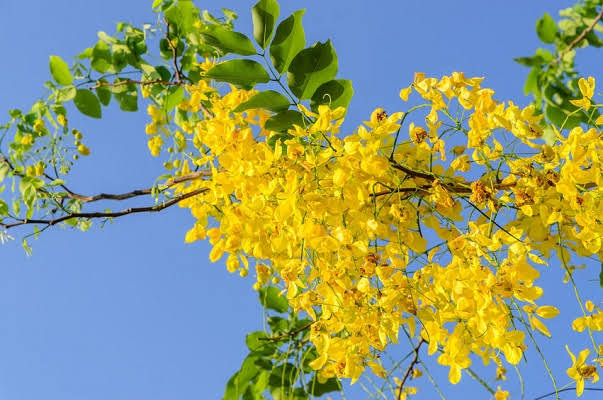

Basonym of Drug
Aaragvadha
Main Synonym
- Kratamaala
- Raajavriksha
- Shampaaka
- Chaturangula
Regional Name
- Assamese: Sonaroo
- Bengali: Sondala
- English: Indian Laburnum, Purging cassia
- Gujarati: Garamala, Garamalo
- Hindi: Amaltas
- Kannada: Aragvadha, Kakke, Kakke-gida, Kakkernara, Kakkedai, Rajataru
- Kashmiri: Kriyangal Phali
- Malayalam: Konna, Kritamalam
- Marathi: Bahava, Garamala, Amaltas
- Oriya: Sunari
- Punjabi: Amaltas
- Tamil: Sarakonrai, Sarak konnai, Sarak kondi, Sharakkonrai
- Telugu: Rela
- Urdu: Khiyar Shambar
Botanical Name
Cassia fistula Linn
Family
Leguminosae
Sub Family: Caesal piniodae
Classification (Gana)
- As per Acharya Charak: Kusthaghna, Kandughna, Virechana
- As per Acharya Sushrut: Aragvadhadi, Syamadi, Slesmasamsamana Adhobhagahara
External Morphology
A moderate sized deciduous tree
Useful Parts
Fruit pulp, Bark, Flower, Leaf, Root
Important Phytoconstituent
Anthra quinine, Arginine, B-glucoside, Beta-sitosterol, Barbaloin, Carbohydrates, Calcium oxalates, etc.
Rasa Panchak
- Rasa: Madhura, Tikta
- Guna: Guru, snigdha, mrudu
- Virya: Shita
- Vipaka: Madhura
Action
Vatapitta shamak, Virechana (Mild purgation), Kusthghna (Alleviates skin diseases), Kandughna (Anti itching), Aamshodhana (Removes Aama), Jvarghna (Anti pyretic)
Therapeutic Indication
- Kustha (Skin diseases)
- Jvara (Fever)
- Kaamalaa (Jaundice)
- Cough
Therapeutic Uses
- Kustha - Leaves of Aragvadhas are made into paste with Aranala and applied externally
- Dry Cough - Flower is used in form of Avaleha (Linctus)
- Fever - Root bark is used
- Aamavaata (Arthritis) - Leaves of aragvadha are fried with mustard oil and taken in the evening followed by a meal. It alleviates ama.
Dose
Fruit pulp: 5-10 gm, For Purgation: 10-20 gm
Root bark decoction: 50-100 ml, Flowers: 5-10 g
Formulations
- Aragvadhadi kvatha
- Aragvadhadi leha
- Aragvadhadi taila
- Aragvadharishta
Adverse Effect
Not Reported
Remedial Measure
Not Required
Purification
The mature fruits are kept under the sun for seven days and left to dry. When they are dried, take out the pulp and store it in an air-tight container in a suitable place.